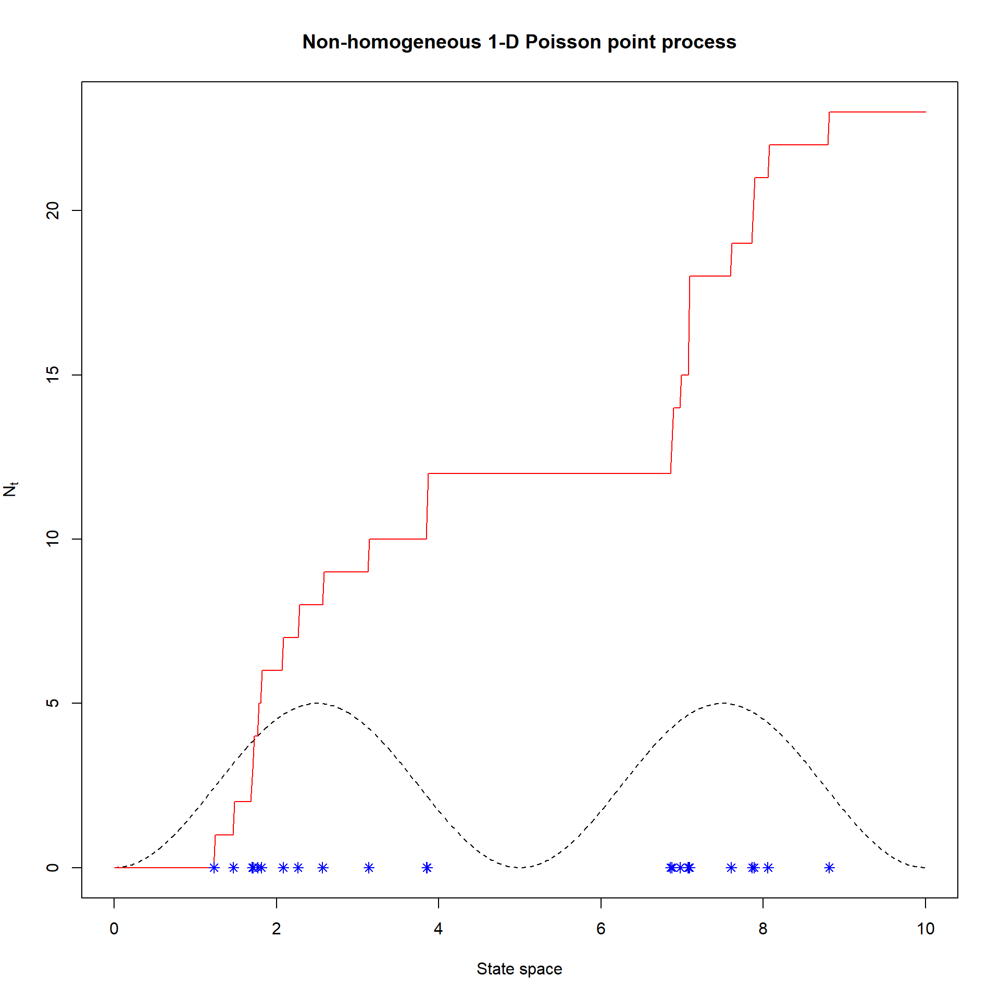
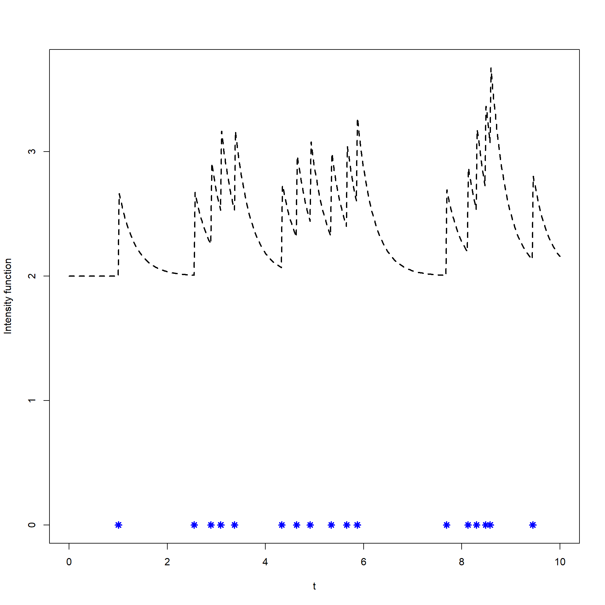
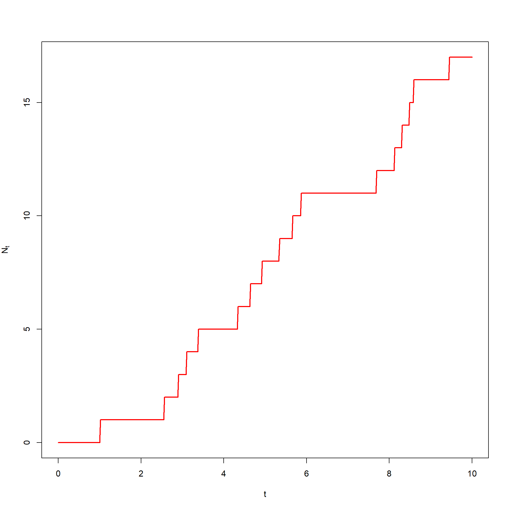
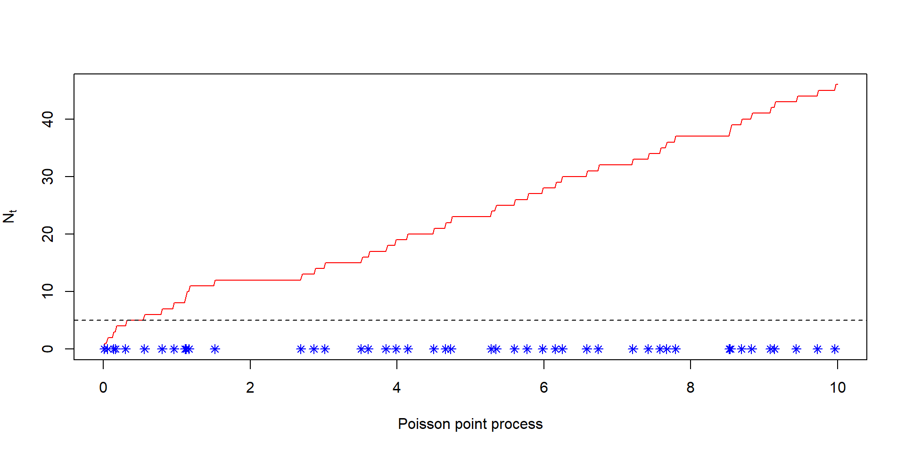
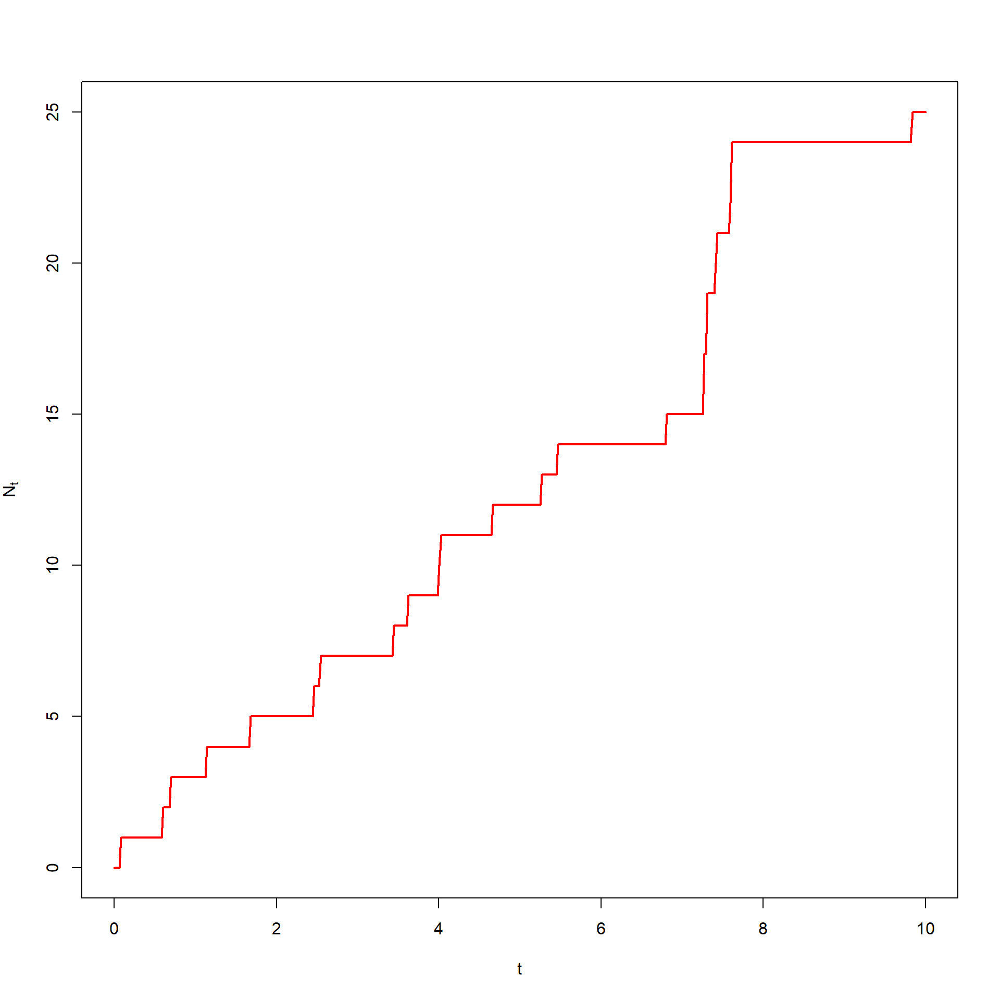
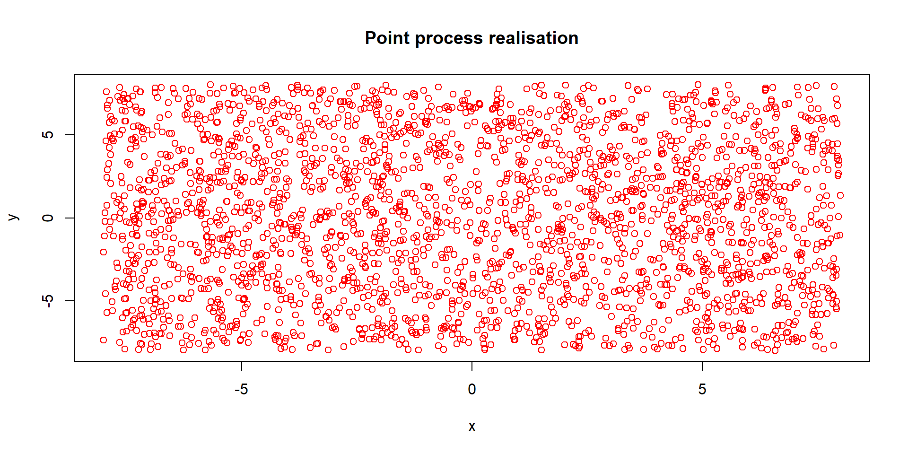
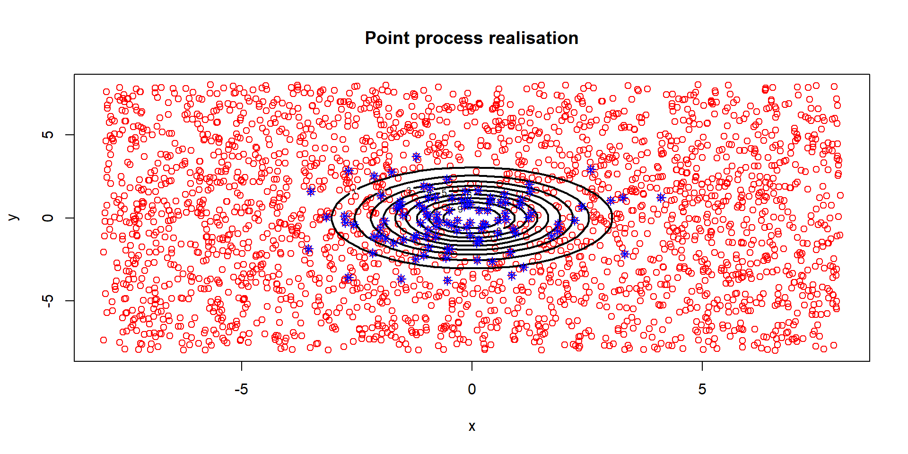
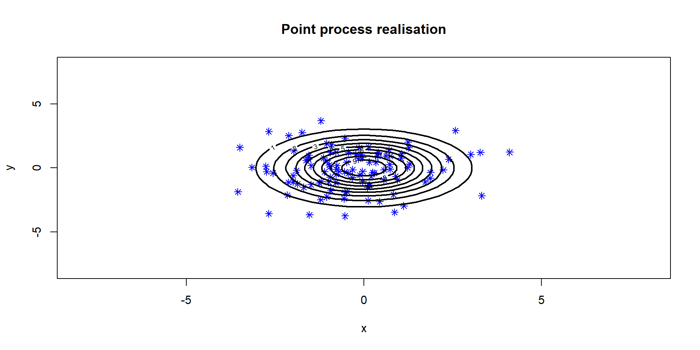

Consider a state space \(\mathbb{S}\) (usually \(\mathbb{R}\), \([0, +\infty)\), or \(\mathbb{R}^n\)).
A point process is a random set of points that lies within \(\mathbb{S}\).
A point process can also be defined as a random counting measure, that counts the number of points in any subset of \(\mathbb{S}\).
A point pattern is a realisation of a point process.
Examples
Phenomenon that can be modeled by point processes: occurrence time of earthquakes and aftershocks (\(\mathbb{S} = [0, +\infty)\)]), location of trees in a forest (\(\mathbb{S} = \mathbb{R}^2\)), impact locations of lightning in a storm (\(\mathbb{S} = \mathbb{R}^2\))…
Some basic notation
Since point processes can equivalently be interpreted as random sets or random counting measures, their notation can come from both set theory and measure theory.
Recall for example the (deterministic) counting measure \(k(B) = n\), for any Borel set \(B\).
A point process \(N\) can be seen as a random collection of points in \(\mathbb{S}\) : \[
N = \{ x_i\}_{i = 1, \dots, n} \subset \mathbb{S}
\] or as a counting measure that counts the number of random points in any Borel set \(B\):
\[
N(B) = k(B \cap \{x_i\}_{i =1, \dots, n})
\]
Some basic notation
The distribution of the point process depends on the borel set on which we consider it.
The distribution of the location of trees depend on the area we are considering (beach, mountain, city,..)
Therefore, if we fix a Borel set \(B \subset \mathbb{S}\), then we can define the distribution of \(N(B)\):
\[
N(B) \sim D(B)
\]
Interpreation
A point process is kind of a random variable that is indexed by sets from the state space \(\mathbb{S}\). For instance, if \(\mathbb{S} = [0, +\infty)\), Then the point process can be entirely described by the random variables \(N_{[s, t)}\) or \(N_{[0, t)} := N_t\).
Some basic notation
One can then compute the expectation of these indexed random variable (the expectation will always depend on the Borel set \(B\) we consider):
\[
\mathbb{E}(N(B)) = \mathbb{E} \left[ \sum_{x_i \in N} 1_B(x_i) \right]
\] Note that this expectation is also called the mean measure of \(N\)
Main examples of point processes
The homogeneous Poisson point process
Formally, a Poisson point process \(N\) is a point process that satisfies the following properties:
The number of points \(N(B)\) in any Borel set \(B \subset \mathbb{S}\) is a Poisson-distributed random variable with mean \(\Lambda(B) = \lambda |B|\), where \(|B|\) is the size of \(B\) in \(\mathbb{S}\).
If \(B_1, \dots, B_k\) are disjoint (\(B_i \cap B_j = \emptyset, i \neq j\)), then \(N(B_1), \dots, N(B_k)\) are independent.
We can therefore write:
\[
\forall B \subset \mathbb{S},\quad \forall n \in \mathbb{N}, \quad \mathbb{P}(N(B) = n) = e^{-\lambda |B|}\frac{(\lambda |B|)^n}{n!}
\]
Main examples of point processes
Example of a 1D homogeneous Poisson point process
The “random set of point” is in blue, the counting measure \(N_{[0, t)} := N_t\) is in red and the intensity function is the black dashed line.
Main examples of point processes
Non-homogeneous Poisson point process
Formally, a Poisson point process \(N\) is a point process that satisfies the following properties:
The number of points \(N(B)\) in any Borel set \(B \subset \mathbb{S}\) is a Poisson-distributed random variable with mean \(\Lambda(B) = \int_B \lambda(x)dx\), where \(\lambda(x) \ge 0\) is a deterministic function.
If \(B_1, \dots, B_k\) are disjoint (\(B_i \cap B_j = \emptyset, i \neq j\)), then \(N(B_1), \dots, N(B_k)\) are independent.
We can therefore write:
\[
\forall B \subset \mathbb{S},\quad \forall n \in \mathbb{N}, \quad \mathbb{P}(N(B) = n) = e^{-\Lambda (B)}\frac{\Lambda (B)^n}{n!}
\]
Interpreation
The function \(\lambda(x), x \in \mathbb{S}\) is called the intensity function of the Poisson process. In regions of \(\mathbb{S}\) where \(\lambda(x)\) is high, the point process is likely to have a lot of points, whereas in regions of \(\mathbb{S}\) where \(\lambda(x)\) is low, the point process is likely to have fewer points.
Main example of point processes
Example of a 1-D Non-homogeneous Poisson point process

The “random set of point” is in blue, the counting measure \(N_{[0, t)} := N_t\) is in red and the intensity function is the black dashed line.
Main examples of point processes
The Cox point process
The Cox point process is a generalisation of the Poisson point process that relaxes the requirement of a deterministic intensity function.
The number of points \(N(B)\) in any Borel set \(B \subset \mathbb{S}\) is a Poisson-distributed random variable with mean \(\Lambda(B) = \int_B \lambda(x)dx\), where \(\lambda(x) \ge 0\) is a random function (for example \(\lambda(x) = e^{-Yx}\) with \(Y \sim \text{Exp}(\mu)\)).
If \(B_1, \dots, B_k\) are disjoint (\(B_i \cap B_j = \emptyset, i \neq j\)), then \(N(B_1), \dots, N(B_k)\) are independent conditionally on \(\Lambda(B_1), \dots, \Lambda(B_k)\).
Important members of the Cox point process family
If we consider the Gaussian point processes to be the multidimensional generalisation of Gaussian processes, then we can define the log-Gaussian Cox point process which has the intensity function \(\lambda(y) = e^{X(y)}\), where \(X(y)\) is a Gaussian point process.
Main examples of point processes
The Hawkes (self-exciting) point process
The Hawkes point process is part of the Cox point process family, it is usually defined on the half real line. The intensity function of the Hawkes process depends on \(t \in [0, +\infty)\) but also on the previous points of the process.
Let \(N\) be a point process. Let \(\mathcal{H}_s = \{t_i\}_i\) be the points of the process that are lower than \(s\). Then the conditional intensity of the Hawkes point process is:
\[
\lambda(s |\mathcal{H}_s)= \mu(s) + \int_{-\infty}^s h(s-t)dN_t = \mu(s) + \sum_{T_i<s}h(s-T_i)
\] where \(N=\{T_i\}_i\) and \(h\) is a function called kernel.
Main examples of point processes
The Hawkes (self-exciting) point process
As usual, conditionally on \(\mathcal{H}_t\), \(N\left([t_1, t_2)\right)\) has a Poisson distribution with mean \(\Lambda([t_1, t_2)) = \int_{t_1}^{t_2}\lambda(s|\mathcal{H}_s)ds\).
Examples of kernels are:
The exponential kernel: \(h(s) = \alpha e^{-\beta s}\)
The power kernel: \(h(s) = \frac{\alpha}{(1+\beta s)^n}\)
Self-exciting property
The Hawkes process is said to be “self-exciting”, meaning that one occurence of the process increases the likelihood of another occurrence happening.
Main examples of point processes
Example of a 1-D Hawkes point process with the exponential kernel


Properties & theorems on point properties
Marked point processes
A point process only describes the locations of points in some state space \(\mathbb{S}\), to describe what happen at this location, one can define marked point processes.
Let \(N = \{x_i\}_i\) be a point process and let \(Y_i\) be some random variables indexed by the points of \(N\) (not necessarily defined on the same state space as \(N\)).
\[
\tilde N = \{(x_i, Y_i), x_i \in N\}
\] Is a marked point process.
Interpretation
A marked point process is simply a “labelled” point process, where we added a label to every point generated by the point process. This label can be random or deterministic.
For example, one can consider the previous example with the forest: \(N\) represent the location of trees in a forest and \(\tilde N\) is the marked process where the points \(x_i\) are the location, and \(Y_i\) is the (random) species of the tree.
Properties & theorems on point processes
Simple point processes
Definition
A point process \(N\) is said to be simple if all the points of \(N\) are distinct with probability one. In other words, a simple point process is a random closed set.
The Poisson point process and the Hawkes point process are examples of simple point processes.
Properties and theorems on point processes
Mean measure and intensity function
Definition
Let \(N\) be a point process. The mean measure of \(N\), denoted \(\Lambda\) is defined for any Borel set \(B \subset \mathbb{S}\) as
\[
\Lambda(B) = \mathbb{E}(N(B))
\] Intuitively, the mean measure is an actual measure that gives the expected number of points in the region \(B\) of \(\mathbb{S}\).
Definition
Let \(N\) be a point process. We say that the mean measure admits an intensity/density function \(\lambda\) if there exist a non-negative function \(\lambda\) such that:
\[
\Lambda(B) = \int_B\lambda(x)dx
\] Intuitively, \(\lambda(x)\) quantifies how likely it is to find a point in the neighbourhood of \(x \in \mathbb{S}\).
For example, if \(N\) is a homogeneous Poisson point process with rate \(\lambda\) defined on \(\mathbb{S} = [0, +\infty)\), the mean measure of \(N\) is \(\Lambda([s, t)) = \lambda(t-s)\) and the intensity function is \(\lambda(t) = \lambda\).
Properties and theorems on point processes
Mean measure and intensity function
Remark
Note that the intensity function can be defined more formally. For instance here in 1D:
Let us consider a 1D homogeneous Poisson point process \(N([0, t)) := N_t\) with rate \(\lambda > 0\). If we apply the time transformation \(\tau = t \lambda\) then the resulting point process \(\tilde N([0, \tau)) := \tilde N_\tau\) is distributed such that :
\[
\mathbb{P}(\tilde N_\tau = n) = \mathbb{P}(N_{t\lambda} = n) = e^{-\lambda t}\frac{(\lambda t)^n}{n!} = e^{-\tau}\frac{\tau^n}{n!}
\] Which is a homogeneous Poisson process with rate 1 !
It turns out that this “rescaling” property of point processes is extendable to any simple point process.The right definition for \(\tau\) is then \(\tau(t) = \Lambda([0, t))\).
Remark
This can be really handy in the context of model validation or assessment of the goodness-of-fit. Indeed, after infering the mean measure parametrically or non-parametrically with some point patterns, one can apply the above scaling transformation to the pattern and test whether this new pattern is a homogeneous point pattern with unit rate.
Properties and theorems on point processes
Waiting times
In the context of 1D point processes. An important concept is the waiting time.
Let us consider a 1D point process \(N = \{T_i\}_i\) defined on \(\mathbb{S} = [0, +\infty)\). The waiting times are defined as the time difference between to events:
\[
\Delta T_i = T_i - T_{i-1}
\]
Important remark for simulation
In some setting, we can derive the distribution of these \(\Delta T_i\). For instance, for a 1D homogeneous Poisson point process, \(\Delta T_i \overset{\text{i.i.d.}}{\sim} \text{Exp}(\lambda)\).
Properties and theorems on point processes
Operations on point processes
To create new point processes out of existing one, we can use several operations:
Superposition: for \(N_1 = \{x_i\}_i\) and \(N_2 = \{y_i\}_i\) two point processes, the superposition \(N = N_1 \cup N_2 = \{x_i\}_i \cup \{y_j\}_j\)
Thinning: for a point process \(N\), one can “filter” the point using some rule. For instance: \(\forall x_i \in N, \text{ keep } x_i \text{ with probabiliy } p, \text{ otherwise reject } x_i\).
Clustering: Let \(N\) be a point process (which we will call the parent point process), for any point \(x_i\) of this process, create a new daughter point process \(\tilde N(x_i)\). Once all the sub-processes are created, we superpose all the sub-processes together. (Creates a natural clustering in the superposition of all the daughter point patterns).
Practical use
This operations heavily use the properties and techniques used in set theory to create new sets out of existing ones. These are also very useful when it comes to simulating point processes.
Simulation
Simulation of Poisson point processes
Homogeneous Poisson point process.
As seen in the definition of the homogeneous Poisson point process, for a region (or simulating window) \(W\) of the state space \(\mathbb{S}\), the number of points is \(N(W) \sim \text{Poisson}(\lambda |W|)\). We can easily sample from a Poisson distribution (e.g. rpois in R). But how can we place each points?
Since \(N\) is a homogeneous poisson process, for any sub-region \(B\) of \(W\), the number of points in \(B\) must be Poisson distributed with mean \(\lambda |B|\), this can only be achieved if the points are uniformly placed in the simulation window \(W\).
Simulation algorithm on \([0, T)\)
Example in 1D: let \(\lambda > 0\), the simulation window will be \([0, T), T>0\)
We first generate the number of points in the simulation window: \(N \sim \text{Poisson}(\lambda T)\).
Then we generate N points \(\{ T_i \}_{i = 1, \dots, N}\) uniformly distributed along the interval \([0, T)\).
Simulation of Poisson point processes
Homogeneous Poisson point process.
######### Homogeneous Poisson Point process simulation## 1-D Simulation (Ex: specific events in time)T_tot =10lambda =5N =rpois(1, lambda*T_tot) # Random number of points in the simulation windowpoint_pattern =runif(N, min =0, max = T_tot) # Random location along the state space (here [0, + infinity))# Computing the counting processt =seq(0, T_tot, length.out =500)N_t =matrix(0, ncol =length(t))for (point in point_pattern){ N_t = N_t +as.numeric(point < t)}
Simulation of Poisson point processes
Homogeneous Poisson point process.

Simulation of Poisson point processes
Non-homogeneous Poisson point processes.
Remark
This method only works if the intensity function is bounded almost surely.
Recalling the definition of the non-homogeneous Poisson process \(N\), we suppose that we have access to an intensity function \(\lambda(t)\) (e.g. \(\lambda(t) = \sin\left(\frac{2\pi}{T}t\right)^2\)). The intensity function is assumed to be bounded by \(\lambda_\text{max}\).
Simulation algorithm on \([0, T)\)
We first simulate a homogeneous Poisson point process \(N_h\) on \([0, T)\) with rate \(\lambda^* \ge \lambda_\text{max}\).
We then apply a thinning operation on this realisation, using \(p(t)-\text{thinning}\):
For any point \(t_i \in N_h\), keep this point with probability \(p(t_i) = \frac{\lambda(t_i)}{\lambda^*}\), otherwise discard it.
The resulting points is a realisation of \(N\).
Simulation of Poisson point processes
Non-homogeneous Poisson point processes.
intensity =function(t, T = T_tot, lam =1){return(lam *sin(4*pi*t/T)^2)}# Homogeneous processT_tot =10lambda =5N =rpois(1, lambda*T_tot) # Random number of pointspoint_pattern =runif(N, min =0, max = T_tot)#Thinningfinal_point_pattern =c()for (t in point_pattern){if (runif(1) <intensity(t, T_tot, lam = lambda)/lambda){ final_point_pattern =c(final_point_pattern, t) }}x =seq(0, 10, length.out =500)N_t =matrix(0, ncol =length(x))for (point in final_point_pattern){ N_t = N_t +as.numeric(point < x)}
Remark
This method is essentially an accept-reject algorithm and therfore has the same inconvenients:
A lot of points are generated and then discarded, leading to a waste of computational resources
This solution requires some upper bound \(\lambda^*\), the higher this bound is, the larger the computational waste is.
One way to (partly) circumvent this bottleneck is to use an MCMC algorithm
Simulation of Poisson point processes
Non-homogeneous Poisson point processes.
Simulation of Hawkes processes
Algorithm
Recall the definition of a Hawkes process \(N\). This process is defined as a Poisson process with a random intensity function that depends on the history \(\mathcal{H}_s\) of the process:
\[
\lambda(s| \mathcal{H}_s) = \mu(s) + \sum_{T_i < s} h(s-T_i)
\] with \(h\) a kernel function and \(\mu\) is a non-negative deterministic function.
Simulation algorithm on \([0, T)\):
Initialise the alogorithm with \(s=0\) and \(N = \emptyset\).
Generate a exponential-distributed value \(w\) with rate \(\lambda(s)\)
Set \(t^* = s +w\) and compute \(\lambda(t^*)\).
Accept \(t^*\) as a new point with probability \(\frac{\lambda(t^*)}{\lambda(s)}\), reject otherwise.
Ensure all the generated values are below \(T\).
Simulation of Hawkes processes
Example
###### 1D Hawkes process simulation T_tot =10exp_kernel_function =function(t, alpha =1, beta =1){ # Exponentially decreasing kernelreturn(alpha *exp(-beta*t) * (t>0))}base_rate =2alpha =2beta =3time_points =c()s=0while(s < T_tot){ lambda = base_rate +sum(exp_kernel_function(s-time_points, alpha = alpha, beta = beta)) u =runif(1) w =-log(u)/lambda # Exponentially distributed waiting time with rate lambda s = s+w test =runif(1)if (test*lambda < base_rate +sum(exp_kernel_function(s-time_points, alpha = alpha, beta = beta))){ time_points =c(time_points, s) }}time_points = time_points[time_points <= T_tot]t =seq(0, 10, length.out =500)lambda_t =c()for (t_i in t){ l = base_ratefor (t_event in time_points){ l = l +exp_kernel_function(t_i - t_event, alpha = alpha, beta = beta) } lambda_t =c(lambda_t, l)}N_t =matrix(0, ncol =length(t))for (point in time_points){ N_t = N_t +as.numeric(point < t)}
Simulation of Hawkes processes
Example

Mutlivariate simulation
Poisson processes
For Poisson process, one can easily extend the algorithms to higher dimension. Instead of generating uniformly-distributed locations along one axis (1D), we can simply generate several locations along multiple axis.
Simulation algorithm on \([-a, a]^2\)
Example in 2D: let \(\lambda > 0\), the simulation window will be \([-a, a]^2, a >0\)
We first generate the number of points in the simulation window: \(N_h \sim \text{Poisson}(4 a^2\lambda^*)\).
Then we generate N points \(\{ X_i \}_{i = 1, \dots, N}\) uniformly distributed along the set \([-a, a]^2\).
We then apply a thinning operation on this realisation, using \(p(x)-\text{thinning}\):
For any point \(x \in N_h\), keep this point with probability \(p(x) = \frac{\lambda(x)}{\lambda^*}\), otherwise discard it.
The resulting points is a realisation of \(N\).
Mutlivariate simulation
Poisson processes

Mutlivariate simulation
Poisson processes
Mutlivariate simulation
Poisson processes

Mutlivariate simulation
Poisson processes

Mutlivariate simulation
Hawkes processes
One can consider several interconnected Hawkes point processes: \((N_1, N_2, \dots, N_k)\) such that conditionally on their history \((\mathcal{H}^1_s, \mathcal{H}^2_s, \dots, \mathcal{H}^k_s)\) at time \(s\), they have the following intensity function:
\[
\lambda^i(s|\mathcal{H}^1_s, \mathcal{H}^2_s, \dots, \mathcal{H}^k_s) = \mu_i(s) + \sum_{j=1}^k \left[\sum_{T_l^j \in N_j, ~~ T_l^j < s} h_{j,i}(s-T_l^j)\right]
\] where \(h_{j,i}(.)\) is the kernel function, that parameters the influence of the process \(N_j\) on \(N_i\).
For instance, one can opt for \(h_{j,i}(s) = \alpha_{j,i}e^{-\beta_{j,i}s}\), where \(\alpha = (\alpha_{j,i})_{j,i}\) and \(\beta = (\beta_{j,i})_{j,i}\) are matrices of parameters.
Mutlivariate simulation
Hawkes processes
The dashed black line is the conditional intensity function and the blue points are the occurrence times for the three processes.
Daley, D. J., and D. Vere-Jones. 2003. An Introduction to the Theory of PointProcesses. Probability and Its Applications. New York: Springer-Verlag. https://doi.org/10.1007/b97277.
Møller, Jesper, and Jakob G. Rasmussen. 2005. “Perfect Simulation of Hawkes Processes.”Advances in Applied Probability 37 (3): 629–46. https://doi.org/10.1239/aap/1127483739.
Ogata, Y. 1981. “On Lewis’ Simulation Method for Point Processes.”IEEE Transactions on Information Theory 27 (1): 23–31. https://doi.org/10.1109/TIT.1981.1056305.
Schoenberg, Frederic Paik. 2011. “Introduction to PointProcesses.” In Wiley Encyclopedia of OperationsResearch and ManagementScience. John Wiley & Sons, Ltd. https://doi.org/10.1002/9780470400531.eorms0425.